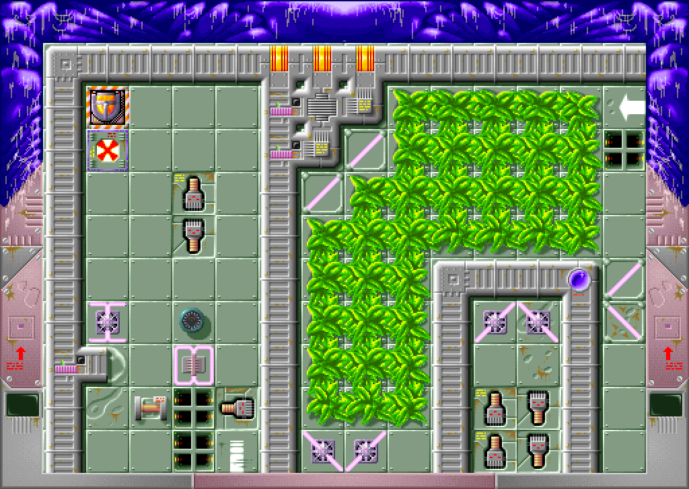
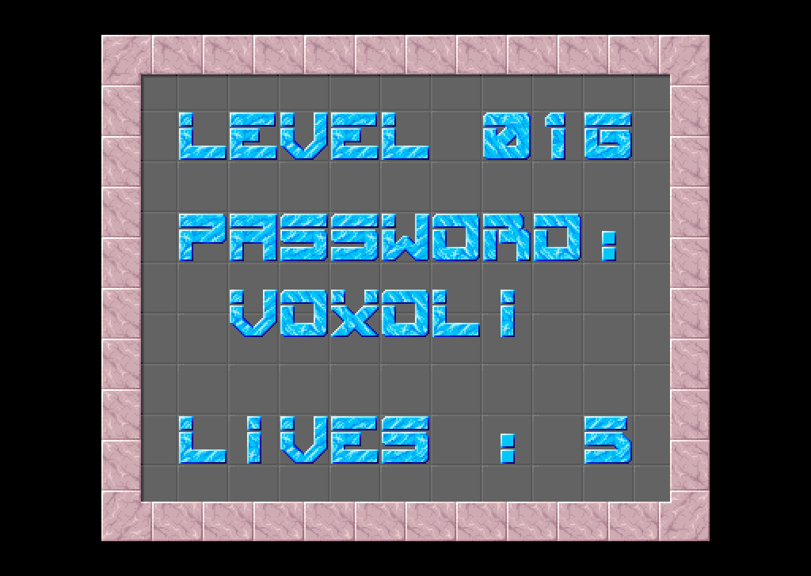
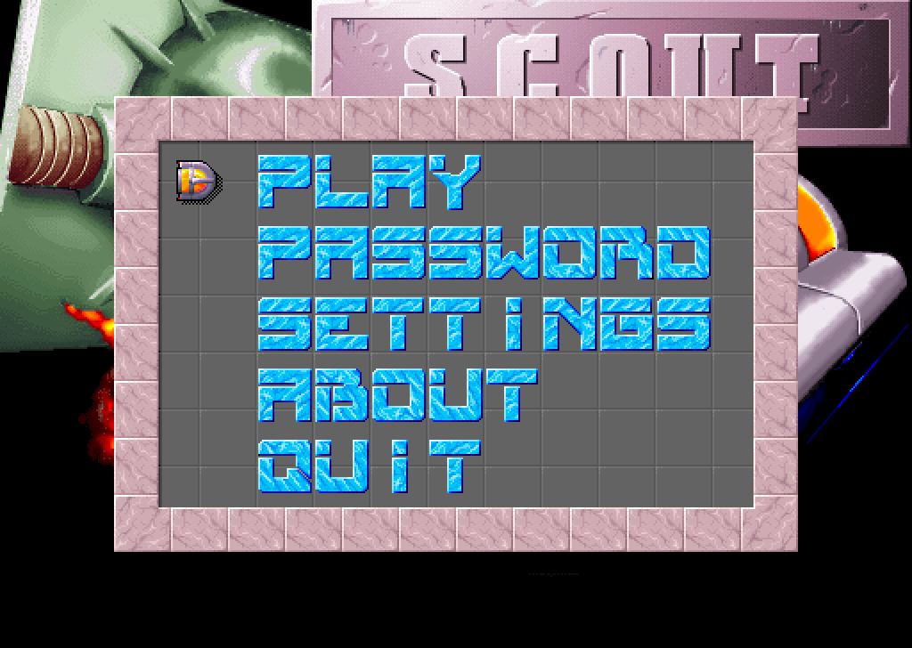
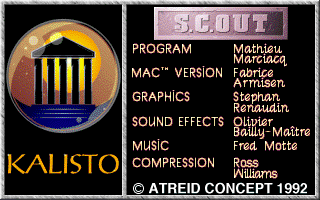

S.C.Out, the 1993 Mac game by Kalisto, rewritten to run on macOS, Windows and Linux. The same 101 levels, rules, sounds and music as the original - in a window or full screen, with sharp pixels.
You steer a small armoured scout through a hostile base, one screen of boxes at a time. Open doors with keys and switches, ride rails and teleporters, push your way past conveyors, dodge cannons and mines - and destroy the target that ends each level. Every level has a six-letter password that brings you back to it.
The puzzles get mean quickly. Five lives, checkpoints on the way, and a self destruct button for the moments you have locked yourself in.

This is not a remake. The levels, pictures and sounds come from the original Mac version, and the rules were taken from its program code and checked against it: the original's code runs in an emulator next to this version, and both have to do exactly the same, frame by frame.
- The game runs at 60 frames per second, like the original on a fast enough Mac.
- Fred Motte's music, played by a copy of the original's own music player - with a few bugs of that player fixed.
- Bugs of the original game are written down, and where fixing one would change how the game plays, it stays.
- New: keys you can change, full screen, pixels scaled by whole numbers, and the game pauses when you switch to another window.


With Homebrew on a Mac or on Linux, install the game and start it:
brew install metalsnake-classic-mac-ports/games/ouro-scout
ouro-scoutOr build it from its source code; it takes a few minutes, and the game data is included.
- Install Rust and SDL3. On a Mac with Homebrew:
brew install sdl3 - Get the source:
git clone https://github.com/metalsnake-classic-mac-ports/Ouro-S.C.Out cd Ouro-S.C.Out - Build and start the game:
cargo run --release -p scout
| Arrow keys | Move |
|---|---|
| Return | Take, drop or swap an object; use a teleporter |
| Space | Fire a missile |
| Esc | Self destruct |
| Command P / Ctrl P | Pause and open the menu |
| Command Q / Ctrl Q | Quit |
| F11 | Full screen |
The game keys can be changed in Settings → Keys.

S.C.Out © 1992 Atreid Concept, published by Kalisto:
- Program
- Mathieu Marciacq
- Mac version
- Fabrice Armisen
- Graphics
- Stephan Renaudin
- Sound effects
- Olivier Bailly-Maître
- Music
- Fred Motte
- Compression
- Ross Williams
Ouro S.C.Out by MetalSnake, 2026. Paul Mercat's 2008 port showed the way into the game. This project is not affiliated with the authors of the original.